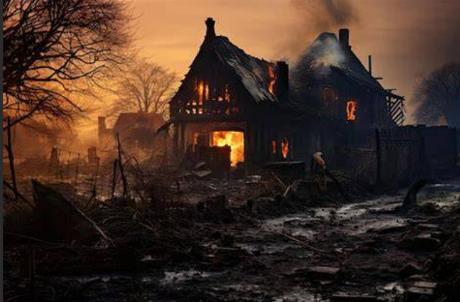

🎃🕷️The house of silence🕷️🎃
It was Halloween night. The wind blew with an unnatural force, stirring dry leaves that danced around the old hill. Three friends—Luna, Mateo, and Sara—were walking toward the House of Silence, an abandoned mansion from which no one had returned for over a hundred years.

The entire village knew its story: The last time it was visited, a family had disappeared there after a terrible night of fire and screams. Since then, no one dared to cross its threshold.
After a long walk through the woods, upon reaching the house, the iron gate creaked open by itself. Inside, the air was icy, almost alive. Every step they took echoed through the empty hallways, where the smell of burnt wood and old wax still lingered.
Suddenly, the front door slammed shut. The lanterns flickered. Upstairs, shuffling footsteps were heard, and at the same time, on the floor, a dusty trapdoor slowly opened. The house seemed to offer them a choice.
Climb the stairs to investigate the noises